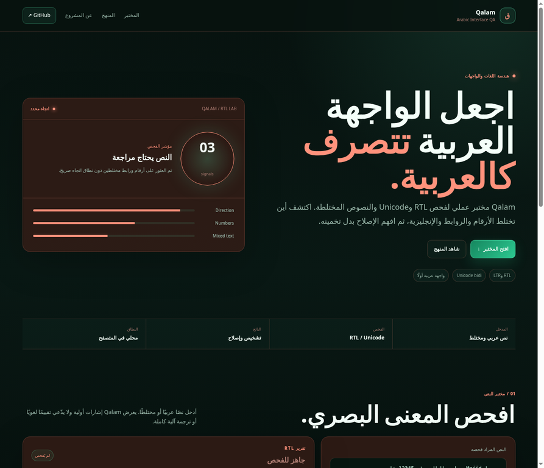
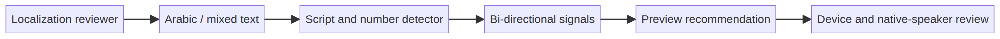

Primary user
Bilingual product teams, frontend developers, localization reviewers, and designers shipping Arabic and English experiences.
Qalam is a local lab for RTL, Unicode bidi, numbers, URLs, and mixed Arabic/Latin runs. It turns visual ambiguity into a signal a bilingual product team can inspect before launch.

Arabic localization is not only a translation task. Direction, numbers, URLs, punctuation, wrapping, and Latin product names can change how a sentence is perceived. Without a named review step, these defects often appear as “the interface feels wrong” after implementation.
Bilingual product teams, frontend developers, localization reviewers, and designers shipping Arabic and English experiences.
Make mixed-direction edge cases visible and testable before asking a reviewer to debug a screenshot.
| Capability | Implementation | Engineering intent |
|---|---|---|
| Script signal | Arabic and Latin character counts | Identify a mixed run that deserves a visual check. |
| Number signal | Arabic and Latin numeric character detection | Keep IDs, dates, and phone numbers visible in review. |
| URL signal | URL and domain-like pattern detection | Recommend explicit LTR treatment for links. |
| RTL-first UI | Arabic document direction and localized labels | Model the context the tool is designed to inspect. |
Qalam reads a sample locally, detects script and number signals, recommends a direction boundary, and leaves final device and native-speaker review to the team.

The default mixed sample produced an `RTL` direction signal, 5 numeric characters, and 3 review signals for mixed Arabic/Latin runs, numbers, and a URL-like value. The interface then displayed `Text needs a visual review`. These are fixture observations, not language-quality metrics.
Boundary: Qalam is a signal generator for Arabic interface QA. It does not perform translation, deep linguistic evaluation, or full bidi conformance.